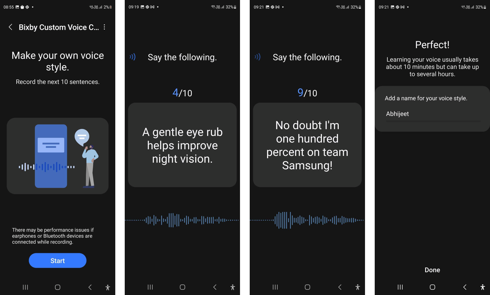

I contributed to the research and development of an on-device personalized TTS system, which was integrated into Samsung Galaxy Bixby's Custom Voice Creation. With just 10 utterances, the Galaxy Phone fine-tunes the TTS system on the user's device directly and creates a personalized TTS system that resembles the user's voice. It can replace the default voice of Galaxy Bixby. Moreover, it can also be utilized within Bixby's Text-call functionality, which transforms voice calls into written text in real-time and vice versa. With this personalized TTS system, users can have a voice call even when they are in situations where they cannot speak.

Samsung Galaxy Bixby's Custom Voice Creation
The thumbnail and content images are from: https://www.sammobile.com/news/bixby-custom-voice-creator-samsung-galaxy-phones-tablets/